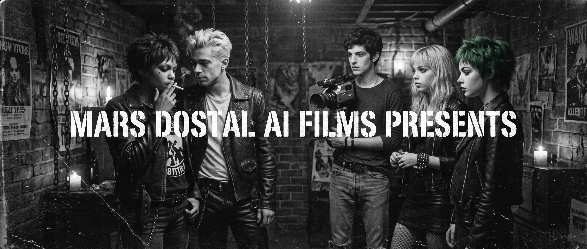

SUBATOMIKA – EPISODE ONE: PARTY CRASHERS is a visceral, neon-soaked sci-fi thriller set in the exact moment Argentina ended a military dictatorship. It’s Friday, October 10, 1986. 3:00 AM in Buenos Aires. The nightmare is over, but the paranoia is still baked into the concrete.
The story follows a crew of cynical, underground young adults—Verushka, Rolly Bombón, Martu, Dana Red, and Marcel L—crashing parties in Palermo Viejo. They’re dressed in black leather, torn nylon, and spiked green hair, living like there’s no tomorrow. And they might be right. Because it’s Day Zero. The timeline is liquefying around them, changing and collapsing into something unrecognizable. A crew of alien saboteurs are altering the past, rewriting reality to cover their tracks before human intelligence agencies can capture and weaponize them.
More than a visual adaptation of my original novel, Subatomika 1986; this is a time capsule, an attempt to let you look into the past and imagine its future the way Verushka does. It’s about the reckless, uncompromised energy of youth colliding with a massive, terrifying conspiracy. The visuals capture the gritty, fast-paced, punk-rock cadence of a generation that refused to stay quiet, set to a heavy synth-and-bass soundtrack composed by Votrox and myself.
Why make this using AI? Simple: I have a massive, cinematic vision and a budget of absolutely zero.
Try pitching a 1986 period piece to a studio on paper. Tell them you need to shoot at 3:00 AM on the streets of Buenos Aires. Tell them you need a fleet of vintage Taunus and Citroën cars, tell them you need historically accurate underground club wardrobes for a massive ensemble cast, and blockbuster-level sci-fi visual effects for when reality starts warping. And if you’re an indie filmmaker, doing this with real actors and practical locations for free is literally impossible.
But Subatomika is too visual, too urgent to just sit on a hard drive as a manuscript. I needed a pilot to show, not just tell. I want to pitch this directly to Netflix or Prime Video, and to do that, they need to feel the vibe. AI gave me the Hollywood studio lot I couldn't afford. This isn’t some random generative experiment; this is a highly directed, fully realized proof-of-concept. It proves that the world of Subatomika is marketable, visually stunning, and ready for a green light. It’s a premium sci-fi thriller with a totally unique cultural fingerprint, and this pilot is the battering ram to get it onto screens.
I didn't just type a prompt and cross my fingers. Subatomika is the result of years of deep historical research and the heavy lifting of writing a 300+ page novel. To bring it to the screen, I had to merge the mindset of an author with my real-world filmmaking and audiovisual experience.
For the past three years—basically since AI video generation was born—I’ve been building this universe shot by shot. I turned my workspace into a solo digital studio (Mars Dostal AI Films). I built massive, complex relational databases and character bibles to force the models to understand who these actors are, how they move, what their nervous tics are, and the heavy historical trauma driving their dialogue.
I’ve been using a wild mix of open-source local tools, custom workflows, and every advanced AI model available to act as my crew. AI didn’t write or direct this; it assisted me through every brutal stage of pre-production, production, and post. From locking in the exact look of Rolly’s bleached hair to generating the temporal shifts and mixing the audio, this was a massive solo journey to prove that if the story is strong enough, the technology exists right now to put it right in front of your eyes.
Survive the night or do it over